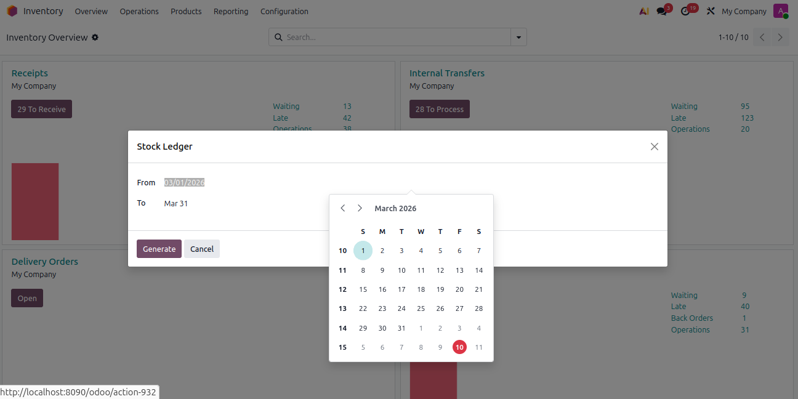
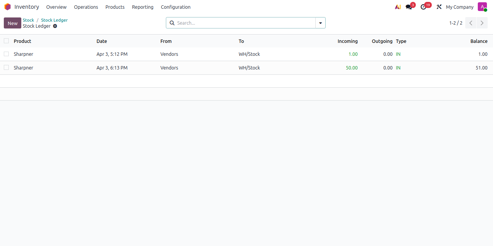

Instant Action Access
The module adds a direct 'View Ledger' action button on product list views. Access any product's historical ledger instantly without complex navigation or search steps.

Odoo's standard Inventory module provides current stock levels and basic movement reports, but lacks a chronological, line-by-line ledger view. The Stock Ledger Report acts like a bank passbook for your warehouse: showing the opening balance, every IN and OUT transaction with source and destination details, and a live running balance after each movement. Trace discrepancies instantly and provide auditors with a clean, transparent transaction trail.
Tracks every single stock transaction chronologically with detailed from/to locations.
Automatically calculates and displays a cumulative stock balance after every transaction completes.
Computes the opening balance correctly for any selected date range by summing all prior done stock moves.
Highlight incoming and outgoing shipments in clear green and red indicators for rapid scanning and auditing.
Runs entirely on your local Odoo server database with 100% security, privacy, and zero third-party calls.
Works seamlessly with native Odoo actions to instantly print reports or export data to spreadsheet formats.
Launch the stock ledger report and input your desired date filters. The wizard comes pre-filled with the previous full calendar month, so you can execute the calculation with a single click.

Once computed, the ledger outputs a detailed tabular history of every stock move. Review exact transaction times, source locations, destination points, color-coded IN/OUT amounts, and a running cumulative stock balance.

|
1
|
Open Stock Ledger MenuNavigate directly to the new Stock Ledger reporting menu item inside the Inventory application. |
|
2
|
Set Date RangeEnter your desired start and end dates inside the pre-filled calendar wizard and click Generate. |
|
3
|
Browse Product ListFilter or search the standard product list. The date parameters are stored in your active session context. |
|
4
|
View & Audit LedgerClick the 'View Ledger' action button on any product row to instantly generate and analyze its historical movements. |
The module adds a direct 'View Ledger' action button on product list views. Access any product's historical ledger instantly without complex navigation or search steps.
Make sure you have completed stock movements (in 'Done' state) in your Odoo database. The ledger calculates opening balance and running transactions specifically for done state stock moves to maintain absolute audit integrity.
| Information | Detail |
|---|---|
| Technical Name | daily_odoo_stock_ledger_report |
| Odoo Version | 18.0 (Community & Enterprise Editions) |
| Dependencies | stock |
| License | OPL-1 |
| Author | Ahex Technologies |
Yes, the module is fully compatible with both Odoo Community and Odoo Enterprise versions. It is developed using Odoo standard ORM API rules.
The current version calculates ledger movements for the selected product date-wise across all warehouse locations. For dedicated location filtering, contact Ahex Technologies for customization.
The opening balance is calculated by summing all completed (Done state) stock movements for the product from the beginning of your Odoo history up to the selected From date. Incoming quantities add to the balance, while outgoing quantities subtract from it.
Odoo's standard reporting shows current stock valuations or stock moves lists, but lacks a running chronological ledger. Our module orders movements by date, shows exact from/to locations, color-codes IN/OUT movements, and calculates a running balance after each transaction—just like a bank statement.